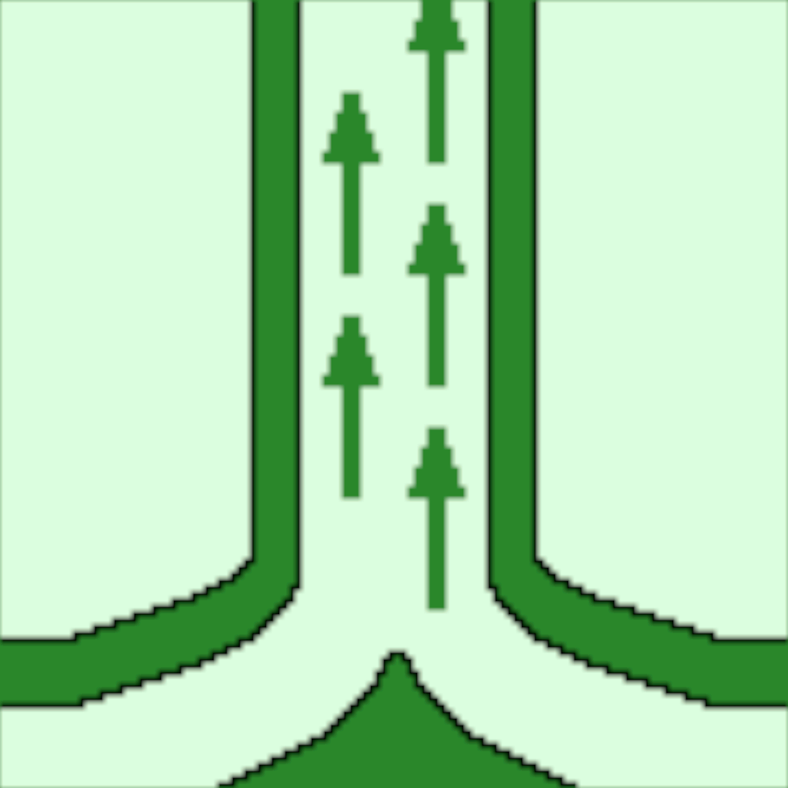

Solar updraft towers are an unknown alternative of green energy.
The solar updraft tower (SUT) is a design concept for a renewable-energy
power plant for generating electricity from low temperature solar heat.
Sunlight heats the air beneath a very wide greenhouse-roofed
structure surrounding the central base of a very tall chimney tower.
See The Science Behind It